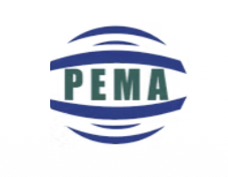
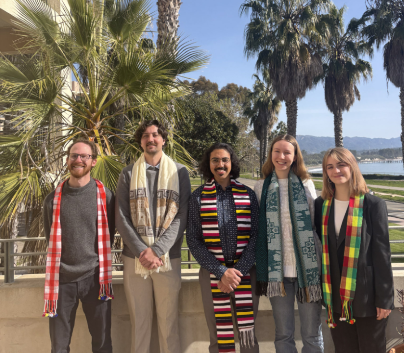
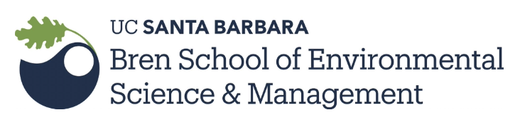

Get In Touch
Project credits, research team, mentors and partners, data source attribution, and contact information for the Pilcomayo basin contamination study.
Site by Katerina Bischel
Faculty Mentors & Advisors
The River Remedy project was guided by mentors across UCSB, AMTSK, and PEMA. Their expertise across environmental geochemistry, mineral processing, hydrology, and environmental management shaped both the analytical work and the recommendations on this site.

River Remedy

River Remedy team and mentors. UCSB Bren School Group Project, 2024–2025.
The Rest of the Team
The site's analytical chapters and visualizations are Katerina's solo work. The four other UCSB Bren School graduate students on the River Remedy group project authored separate report sections covering air pollution modeling, hazard quotient analysis, and environmental justice — work parallel to but distinct from what's presented on this site.
Environmental justice and social vulnerability
Affiliated Organizations

Donald Bren School of Environmental Science & Management, University of California, Santa Barbara
bren.ucsb.eduTrinational Commission
All quantitative analyses on this site draw on monitoring data provided by the Comisión Trinacional para el Desarrollo de la Cuenca del Río Pilcomayo. The Commission is the authoritative custodian of basin-wide water quality and sediment data spanning Bolivia, Argentina, and Paraguay.
Researchers seeking access to raw data should contact the Commission directly. The River Remedy GitHub repository contains site source, visualizations, and methodology documentation only — not the underlying monitoring dataset.